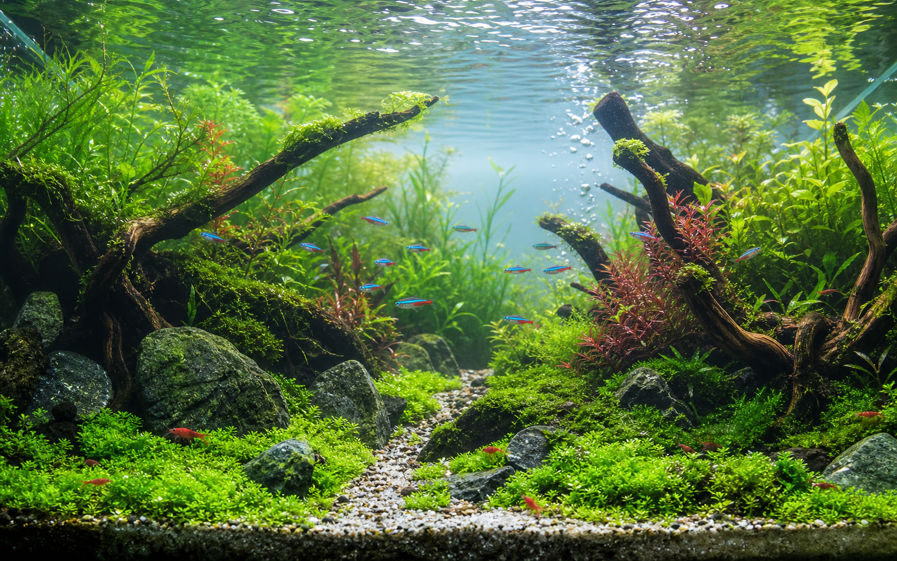

流木レイアウトを少し変更
後景草が伸びてきたので、左奥に高さを出しました。
AquaNote Home
Daily aquarium care
水温、pH、写真、気づいた変化をひとつにまとめて、毎日の管理を軽くします。

Care log
Reminder
Community
Tank manager
My tanks
60cm / 57L / ネオンテトラ、ヤマトヌマエビ、アヌビアス
Linked posts
Album
Timeline
魚の動きは良好。水面の泡は少なめ。
pH 6.8、水温 24.4°C。フィルターは軽くすすぎ。
Share
Ranking
後景草が伸びてきたので、左奥に高さを出しました。
睡蓮の葉が増えて、メダカが日陰で休めるようになりました。
雨の後なので少し濁りあり。明日もう一度確認します。
AI care
状態
良好大きな異常は見当たりません。いつもの管理を続けて、pHと水温を定期的に記録しましょう。
Learn and monetize
水槽、フィルター、ライト、カルキ抜き、底砂をそろえる基本セット。
生体に合う範囲を知り、急変を避けるための記録方法。
水質検査キット、餌、メンテナンス用品をまとめて比較。
餌、ろ過、バクテリア、水換え頻度を落ち着いて確認。
Account and sync
Profile
Data portability
Supabase Auth
Supabase設定を追加すると、ここからログインを試せます。
Cloud schema